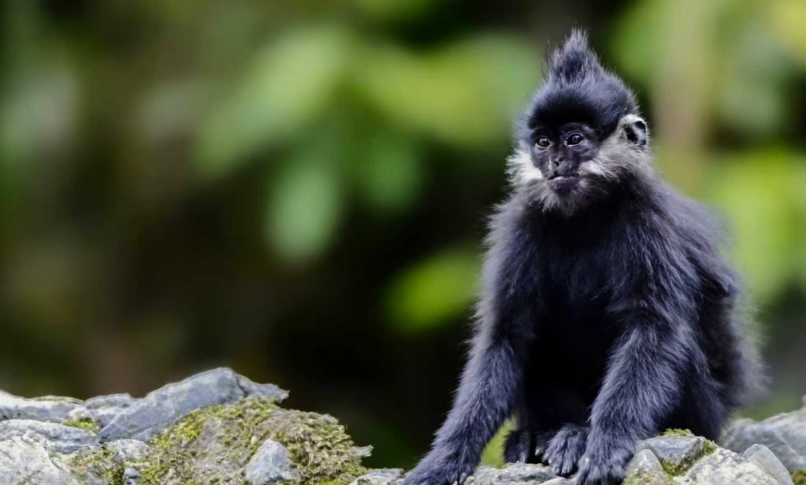

本项目运用被动声学监测 PAM、Fbank 特征提取、PANNS‑CNN10 模型、CBAM 注意力机制与音频二分类检测技术
精准识别黑叶猴 0–3kHz 核心叫声，实现信号增强与目标检测、
突破传统监测局限，为黑叶猴种群监测、行为研究与保护决策提供核心数据支撑。

音察灵猴，声寻其踪：基于深度学习的黑叶猴声学监测研究

精准识别黑叶猴 0–3kHz 核心叫声，实现信号增强与目标检测、
突破传统监测局限，为黑叶猴种群监测、行为研究与保护决策提供核心数据支撑。
黑叶猴为中国特有国家一级保护动物、IUCN 濒危物种，主要栖息于广西、贵州喀斯特石山地区。受栖息地破碎化、人类活动干扰与气候变化影响，部分种群已局部灭绝，生存形势严峻。传统人工追踪成本高、易惊扰猴群、难以长期连续监测，电子项圈等方式具有侵入性伤害风险，亟需非干扰、可持续的监测方案。
我们采用 PAM 被动声学监测 + Fbank 特征提取 + PANNS‑CNN10 模型 + CBAM 注意力机制 + 音频二分类 / 检测技术，全程非侵入、不干扰猴群自然行为，可 24 小时野外自动录音，完美适配喀斯特石山复杂环境，高效解决黑叶猴警惕性高、活动隐蔽、难以近距离追踪的监测难题。
目前已实现黑叶猴长距离鸣叫高效识别，召回率 97.1%、精确率 92.1%，大幅降低人工数据筛选工作量；未来可实现稳定的叫声检测与种群监测，为黑叶猴种群动态追踪、栖息地保护、预警干预提供坚实技术支撑，推动保护工作从经验驱动转向数据智能驱动，为我国珍稀濒危灵长类保护提供可复制、可推广的实用方案。